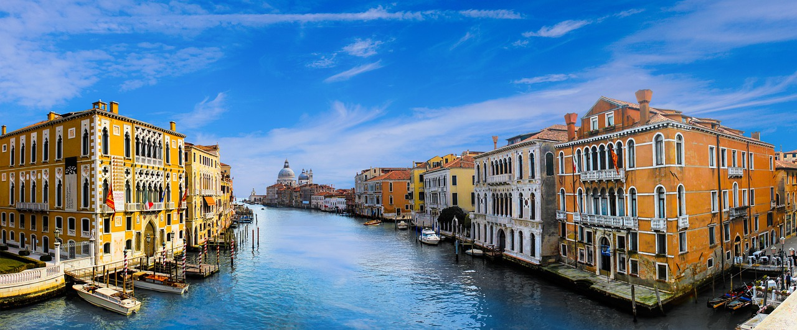
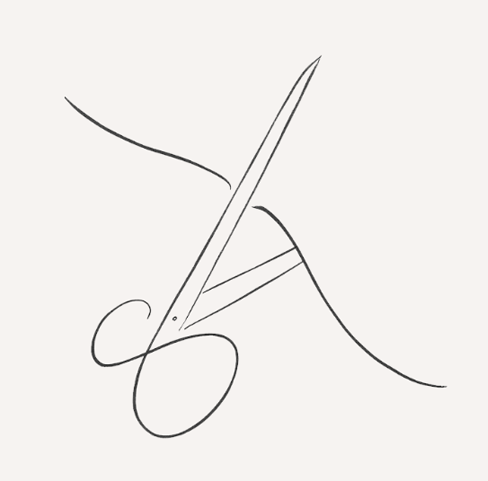

History
Dema는 1962 년 San Gimignano에서 토스카나의 중심부에 설립되었습니다.
이 회사의 의도는 처음부터 분명했습니다 : 높은 기술적 내용을 지닌 소파를 생산하고,
지속적인 미적 연구를 개발하며 기능과 품질을 회사 전략의 근본 가치로 삼으십시오.
이 결정으로 인해 Dema는 혁신적이고 미발표 된 제안으로 이탈리아 및 세계 시장에서
고급 가구를 권위있게 설립하게되었습니다.


Maid in Italia
데마 (Dema)는 이탈리아 전역의 최고의
쇼룸에서 모세관 방식으로 출품되며,
주요 해외 국가 및 시장을 대상으로 한 상업적
유통을 통해 국제 시장에도 출품됩니다.